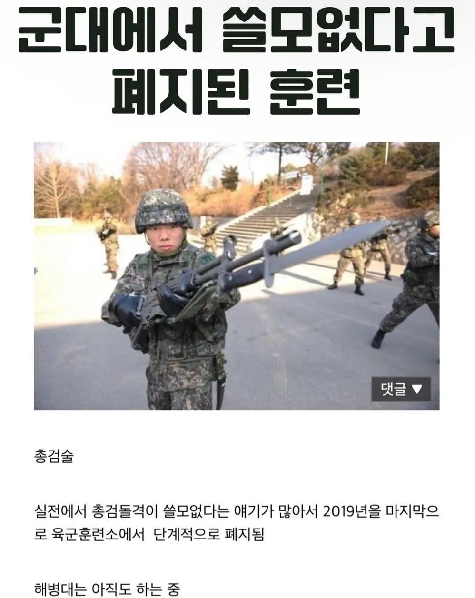

솔직히 왜하나했음

솔직히 왜하나했음
총검술 마스터하면 실전에서 총검술 나가려나
총이랑 친해지기에 좋긴함 총도 계속 만지고 움직여봐야 무게중심 그립감 등등 익숙해지니까
우 러 전쟁에서 1 2차 대전 처럼 참호전을 계속하듯이
미래 전쟁이 있다면 결국 참호전일거같은데.. 최악의 순간에 참호가 오버런 된다고 하면 결국 필요한게 착검 총검술이지 않을까 싶음
파이어 인더홀~~ 드론 뿌슝빠슝~
답은 체인소드 보급이다
건법 앞에서 검법을
맞고 차는척 하고 돌려 쳐
폐지가 아니라 현대화 하는게 맞다고 생각함. 만약을 위해 존재하는 집단이 만약을 준비 하지 않는것만큼 모순된게 어딨음.
총검술 대신에 병사 보조무장 권총보급하면 안되나
총검술보다 건법이 더 쎌것같은데
안그래도 관리힘든 탄약를 권총탄까지 생각하면 쉽지않을듯
부사관 학교에서 주말마다 총검술했던거 토나오네. 근데 참호전이나 최종의 최종 국면에서는 총검술이 필요하다고는 생각함. 너무 비현실적이고 총이라는 화기 특성상 겨루기로 훈련을 하지 못하기 때문에 실전적이지도 못하고.
태권도로 따지면 그냥 기초폼새만 가르치는거 같은거고, 예전처럼 백병전 돌격하는것도 아니니까
우러전 참호전 이후로 다시 중요성 대두됨 변형해서 부활할듯
기존 총검술은 쓸모없긴해
해병대는 돌격이 기본이라 근접할 일도 많을거고 보급받을 상황이 안나올수 있는데
일반병은 그냥 총알떨어지면 총알있는 뒷사람이랑 바꾸고 보급받으러가야지..
태권도+에어로빅 강제로 시킨적 있음
15군번인데 총검술 배운적이 없음 자대가서 오대기 때 총검 달아본게 전부
근데 의외로 우크라이나 전쟁 영상 보다보면 근접전 자주 발생하더라. 미사일과 포격으로 박살을 내고나서 우크라이나 보병들이 시가지나 텅빈 마을 들어가서 확인하고 다니는데 지하실이나 건물안에 생존한 병력들이 기다렸다가 공격해서 근접 총격전은 물론이고 탄 떨어지면 돌과 칼과 개머리판으로 싸우는 상황도 은근 자주 있어서 현대전이라고 무조건 미사일과 드론만 갖고 싸우는건 아니다 싶었음
시가전이 문제구나..
ㅇㅇ 서로 드론때문에 트럭을 이용한 보급이 불가능해져서 아주 조금씩 드론으로 봉투에 보급받는데 이러다보니 탄약이 부족하고 거기에 야간이나 시가전에서 자주 싸우다보니 은근히 칼과 방망이 돌로 싸우고 하는게 진짜 많아서 놀랏음. 특히 참호전이 되면서 10미터 이내 교전도 많고
러시아 용병이랑 우크라병사가 근접전에서 나이프 파이팅하는거 바디캠 영상보고 생각바뀜 나는.....근접전 훈련 무조건 필수임.....진짜 내가 살면서 그 정도로 처절한 영상을 본적이 없다......
우러전보면 생각보다 근거리 참호전 자주일어남
대처하는 방법 모르면 어벙벙하다가 죽음
그냥 보조무기 권총 지급해서,
존윅 영화보고 연습 숙달하는게
군대 전투력 올라가겠단 생각했닼
총검술은 검도처럼 총모양 장봉 만들어서 실전 격검을 해야함
실전없는 격투술은 그냥 무용임
총 모양 무게 만들어서 아예 무술처럼 정립시키면 좋겠네 그걸로 태권도 대체시키고
댓글들 둘러보니 또 최근전투양상은 다른가보네... 거창한거 익히는거보다 총검술 거리감이랑 무게감만 좀 익혀놔도 덜 당황하지 않을까 싶긴하네
해병대는 고립이 될가능성이높고 고립된다는건 보급이 원활하지 않을수있어서
맞음. 우크라이나 전쟁도 보니까 트럭같은건 드론에 다 터져서 소규모로 오토바이나 사람이 걸어서 보급하다보니 탄약부족에 식량부족에...
이근이 우크라이나 가서 싸우고 왔는데 총검술 무조건 필요하다고 하던데
훈련소에서 자기는 북한군 총검술도 배웠다고 보여주던 조교 생각나네 ㅋ ㅋ ㅋ ㅋㅋ
걍 칼만 뽑아서 싸우는게 나올거같음
창이랑 칼이랑 싸움이 안된다
야간전술보행도 없어졌다던데
일반 알보병은 소모품이라 안 시키는것도 클 듯? 특수부대들은 근접 전투까지 다배우고 있으니까
오잉 그러면 백병전은 어떻게 함??
우크라보면 그냥 있을거같은곳에 수류탄까넣기 바쁨
해군에는 적 유도탄에 대해 소총으로 격추 시도하는 훈련도 있었음